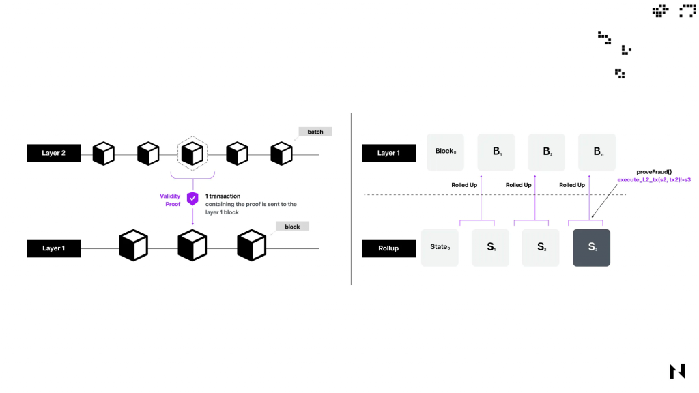
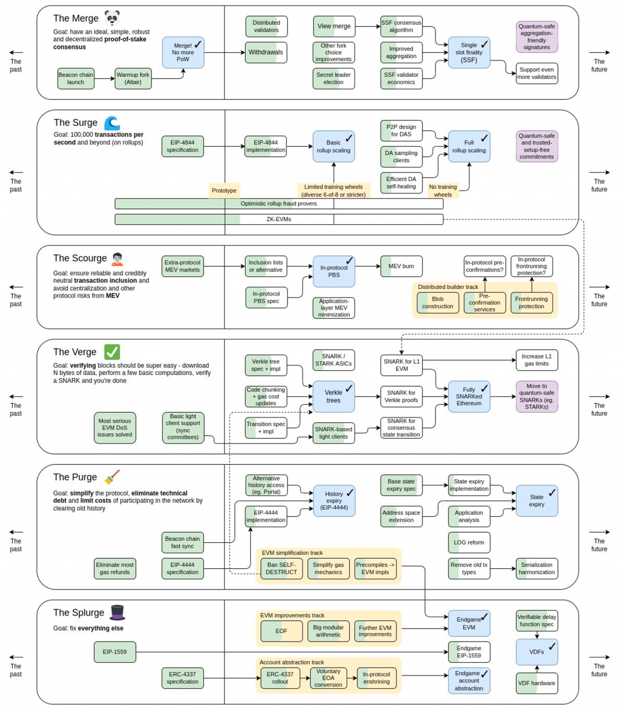
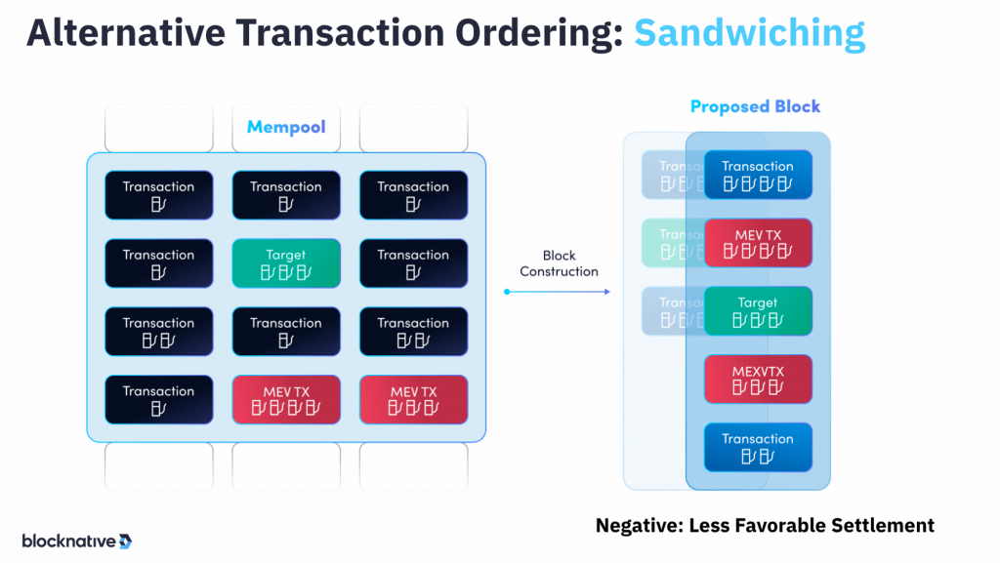
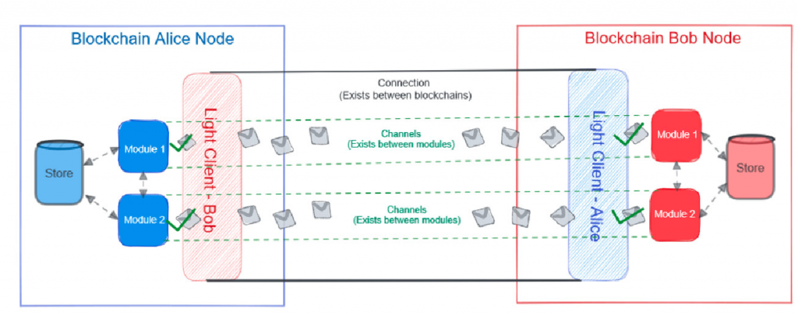
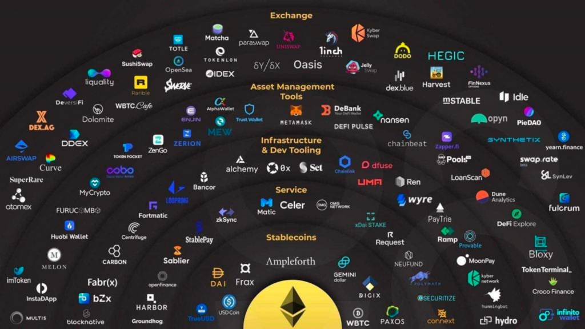
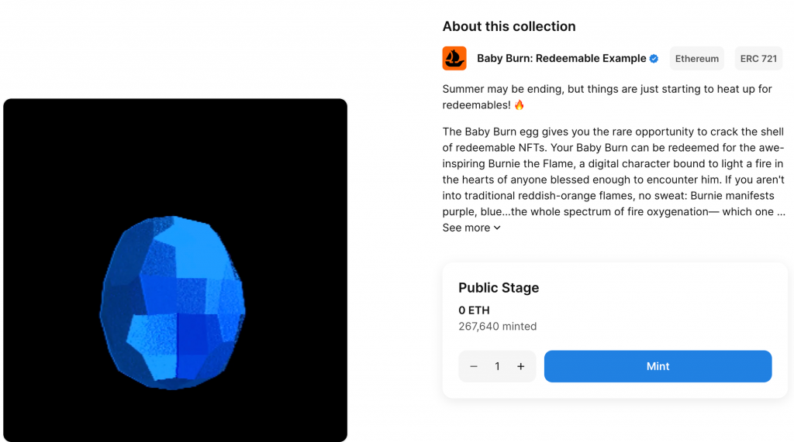

今天我們來探討一些 Web3 的前沿技術。由於 Web3 的技術日新月異，持續有新技術和升級出現，今天會簡要介紹幾個領域及並搭配具有代表性的案例，幫助讀者更全面地了解 Web3 相關技術。
基礎建設主要涵蓋協議、公鏈、儲存和數據等核心技術，它對區塊鏈如何擴展應用範圍且降低使用成本扮演著重要的角色。
在探討 Layer 2 之前我們首先需要明白 Layer 1（L1）。Layer 1，如 Bitcoin、Ethereum、Solana 和 Tron 等鏈，都具有完整的區塊鏈功能，也就是他們都不需要依賴其他鏈並具有獨立的共識機制，因此被稱為 Layer 1。
相對的 Layer 2 是基於 Layer 1 鏈之上建立的擴展解決方案，其目的是提高交易速度（TPS）和降低交易成本（Gas Fee）。並且 Layer 2 主要依靠 Layer 1 的安全性，將 Layer 2 中紀錄的部分數據上到 Layer 1 鏈以確保交易的真實性和不可篡改性。
要實現 Layer 2 主要有三大技術：State Channel、Plasma 和 Rollup。State Channel 是一種雙方參與者之間的私密通道，Plasma 則是一種層次化的區塊鏈架構，而 Rollup 則通過打包多筆交易來減少交易數據。目前最主流正在發展的是 Rollup 技術。
Rollup 又分成 ZK Rollup 和 Optimistic Rollup 兩種。ZK Rollup 使用零知識證明確保交易的完整性和隱私，而 Optimistic Rollup 則是選擇性地在發生爭議時進行計算。兩者的差別在於，ZK Rollup 的交易驗證是即時和完整的，而 Optimistic Rollup 是選擇性的驗證，數據如果在鏈上經過一定的時間沒有被挑戰，他的最終性（Finality）才算是被確定下來。Vitalik 特別看好 ZK Rollup，因為它可以在保證高效性的同時確保數據的安全性，詳細可以參考 Vitalik 的文章 An Incomplete Guide to Rollups。

(圖片來源)
另一方面像 Optimistic Rollup 由於需要把 Layer 2 的資料打包到 Layer 1 上，資料存到 Layer 1 上時的交易手續費就至關重要。這個就是 EIP-4844 提案想解決的問題：目的是降低將 Layer 2 資料打包到 Layer 1 的手續費。它增加了一種名為 blob 的資料類型，用它來儲存資料有助於減少 Gas Fee 和提高吞吐量。這項更新預計將於明年第一季度的坎昆升級中上線。
Vitalik 一直在推動在以太坊中實施 Sharding 技術，以進一步提升性能和減少成本。Sharding 技術將以太坊區塊鏈分割成多個獨立運作的片段，使得每個節點只需要處理一個片段中的交易，以大幅提高網路的擴展性和交易速度。
以太坊的路線圖正朝這個目標前進，前面提到的 EIP-4844 其實是 Proto-Danksharding 機制的一部分，它是為了以太坊未來要實施的 Full Danksharding 做準備。詳細概念可以參考以太坊官方的 Danksharding 文件的介紹。
Vitalik 曾提出以太坊接下來六個階段的路線圖，包括：The Merge, The Surge, The Scourge, The Verge, The Purge, The Splurge。目前正在積極發展 The Surge 階段，這階段的目標就是通過 Rollup 技術實現每秒 10 萬筆交易。

對詳細資訊有興趣的讀者可以參考以太坊官方路線圖。
MEV 的全名是 Miner Extractable Value，允許礦工通過交易排序或選擇哪些交易被包含在下個區塊中來獲取額外收益。其中 Searcher 是主要的套利者，他們在 mempool 中查看待確認上鏈的交易，並尋找對受害者進行套利的機會，有時會造成許多損失。
Flashbots 是 MEV 生態中的核心服務，它提供競價機制讓 Searchers 互相競爭，並為礦工提供具有 MEV 功能的 go-ethereum 版本（連結），幫助礦工打包由 Searchers 而來的套利交易。因為套利交易中通常會給更高的 Gas Fee，對礦工來說是有經濟誘因的。
MEV 攻擊可以分為 front run 和 back run 兩種。Front run 是當一個交易被偵測到且有利可圖時，Searcher 發出一個套利交易並付更高的 Gas Fee 提前完成它。Back run 則是在原始交易之後發出一個交易以獲利。
舉個三明治 MEV Bot 的例子，當機器人偵測到 mempool 中有一筆用 USDT 買入 ETH 的 Swap 交易時，Searcher 可以在這筆原始交易之前插入一筆一樣用 USDT 買入 ETH 的交易（Front Run），並在原始交易後插入一筆賣出 ETH 至 USDT 的交易（Back Run），把這三個交易打包起來送出後，就可以在一個 Transaction Bundle 中達到低買高賣的套利效果。詳細機制可以參考這篇文章。

但這也跟使用者設定的滑點有關，如果 Swap 設定的滑點越高越有可能受到 MEV 攻擊，因為 Searcher 就可以在 Front Run 交易中用更大額的資金來對價格產生更大的影響。最極端的狀況是幾個月前有人把 3CRV 代幣換成 USDT 時因操作不當而被 MEV 套利攻擊，誤把兩百萬美金 swap 成 0.05 USDT，應該也跟他的滑點設定太高有關（參考連結）。
MEV 攻擊還有許多不同的種類，還有像是 DEX 套利、清算交易等等，更多的詳細機制可以參考這篇文章。
除了既有的 L1, L2 區塊鏈以外，有一些應用場景會需要搭建自己的鏈，例如著名的 GameFi 遊戲 Axie Infinity 就在自己建立的 Ronin 鏈上儲存遊戲的 NFT 與代幣資訊，或是像 dYdX 鏈上永續合約協議決定自己用 Cosmos SDK 建立屬於自己應用的鏈，目的都是為了降低手續費與加速交易的執行，也有一個好處是這些應用專屬的鏈就不會受到既有 L1 鏈的擁堵程度所影響。而能幫助開發者快速建立新的鏈並維持跟既有鏈的互通性正是 Layer 0 想解決的問題。
現在較知名的三個 Layer 0 協議為 Cosmos, Polkadot 和 Avalanche，開發者都能用他們的 SDK 建立專屬自己應用的鏈，並且內建跨鏈的功能，例如 Cosmos 的 IBC 以及 Polkadot 的 XCMP 協議都是能夠跨鏈傳輸訊息的方式，相關機制可以參考這篇文章。

在基礎建設之上誕生了一系列的去中心化應用，各有他們想解決的問題
從 2020 年開始的 DeFi Summer 是各種 DeFi 協議迅速增長、許多人投入資金的時期，當時產生了一批關於借貸、流動性挖礦相關的 DeFi 應用。從 Uniswap V2 的 AMM 機制開始，這些協議需要使用者來提供流動性以維持 Swap 的服務，因此流動性挖礦就是用該協議的代幣來獎勵提供流動性的人的機制。
在這之後雖然有一波泡沫的破裂，但 DeFi 協議還是持續演進，提供更多元的交易選項與更有效率的市場方案，包含 Uniswap V3 推出可以自己指定提供流動性區間的功能，來提升資金效率。以及 Uniswap V4 推出了 hooks 功能可以讓使用者指定要執行的限價單。
除了 Swap 服務之外，近年也有許多鏈上衍生品服務出現，包含鏈上的永續合約協議（GMX, dYdX, Perpetual Protocol）、鏈上期權協議（Opyn, Lyra）提供多元的衍生品，以及以太坊從 PoW 升級成 PoS 後帶來 LSDFi 相關的新應用，讓任何使用者都能質押 ETH 貢獻自己成為以太坊驗證節點的一部份，並基於質押的流動性衍生出許多應用，這些協議背後的技術也值得深究。
關於 DeFi 應用的資訊，整理最齊全的是 DefiLlama 網站，讀者可以從中找到許多有趣的 DeFi 協議。

（圖片來源）
之前介紹到 NFT 核心的 ERC-721 與 ERC-1155 並不難懂，而近年也有許多人嘗試將 NFT 的標準定義得更廣泛，例如 ERC-3525 半同質化代幣是想創造出介於 ERC-20 跟 ERC-721 之間的代幣，可以用來代表像債券、保險、vesting plan 等較難用既有協議表示的東西。
而在前面的內容中多次提到的 NFT Marketplace 背後的智能合約技術也非常值得研究，包含 Blur 與 Opensea 的 Seaport 合約都使用了複雜的技術來匹配買賣家的單，並支援批次上架、成交等功能。Blur 的合約解析可以參考這裡。
另外還有一些新的標準想探索 NFT 更廣泛的用途，包含 ERC-6551 是個可以讓一個 NFT 成為一個錢包的協議，也就是轉移這個 NFT 的同時也會把一個錢包的控制權轉移出去，可以用在像一個遊戲角色的 NFT 可以持有一些遊戲內資產、道具的場景，這些資產與道具就會隨著遊戲角色一起轉移。
以及 Opensea 最近提出了 Redeemable NFT 的標準 ERC-7498，因為許多 NFT 的應用是可以兌換線上或線下的某些物品，就衍生出了需要將其標準化的需求，詳細可以參考 Opensea 官方文章，以及今年底前可以在這裡 mint 出 Opensea 範例的 Redeemable NFT。

最後除了 EVM 鏈上的 NFT 外，也是今年由於 Bitcoin 的 Taproot 升級讓比特幣中可以有類似智能合約的功能，就誕生了 Bitcoin 鏈上的 NFT。著名的協議包含 Ordinals 與 BRC-20，也是發展十分早期的東西，有興趣的讀者可以深入研究。
為了降低 Web3 的使用者門檻，任何交易都需要 Gas Fee 是一大問題。因此有許多帳戶抽象的解決方案被提出來，主要目的是把一個「以太坊帳戶」的概念抽象化，讓他支援更多的功能，包含代付 Gas Fee、多簽、社交恢復等等功能，讓用戶體驗更接近於 Web 2 的服務。
已經有許多錢包應用實作帳戶抽象的功能，包含 Gnosis Safe 合約錢包與 Argent 。另外也有今年剛通過的 ERC-4337 帳戶抽象標準，目的是統一所有人的實作並設計去中心化的機制來提高互操作性。關於帳戶抽象與 ERC-4337 標準的資訊也可以參考 Argent 的介紹文章。
除了以上應用外還有非常多元的去中心化應用，像是：
今天我們介紹了非常多的 Web3 前沿技術與正在快速發展的去中心化應用們，而這也還沒包含所有的主題，因此在 Web3 世界中最重要的還是持續學習、嘗試新的技術與應用。明天會介紹這些區塊鏈技術的底層用到的密碼學技術，以及前沿的密碼學主題。